近期恰逢二战胜利70周年。上个月，有几位读者建议俺聊聊二战（尤其是抗日战争）的历史。因为俺在二战胜利65周年那会儿，已经写过一篇《关于抗日战争——谈谈真理部对抗战历史的篡改》。所以今天要换一个角度——聊聊日本是如何战败的。然后再顺便澄清一个常见的误解——很多人太高估“中国战区的作用”。
先来看几个日期：
1945年8月6日——美军在广岛投放原子弹
1945年8月8日——苏联对日宣战，出兵满洲国（东北）
1945年8月9日——美军在长崎投放原子弹
1945年8月15日——日本广播《终战诏书》，宣布投降。
由于这几个日期很接近，容易给人造成两种错觉：
错觉1：以为美国扔了原子弹（并造成巨大伤亡），所以日本才投降
错觉2：以为苏联对日宣战（并迅速拿下东北），所以日本才投降
但实际上并非如此。早在1945年4月份到7月份，日本天皇就意识到必定战败，并且持续推动停战和谈。如果仔细了解二战期间日本高层的动态，就可以发现这一点。下面俺举几个例子来说明天皇的意向。
迹象1——铃木组阁
二战期间日本的最后一任内阁是“铃木内阁”，任期是1945年4月7日至8月17日。铃木贯太郎是日本高层中，【主和派】的代表。让这样一个人来组阁，很容易激怒日本军部中的少壮派好战分子。
顺便说一件往事：
1936年，日本一些激进的少壮派军官（皇道派）发动“226兵变”。他们列出一份“7人暗杀名单”，其中就有铃木贯太郎。当时铃木身中2枪，经抢救幸免未死。
试想一下：如果天皇没有停战的意向，怎么会让他来组阁？所以，至少在4月初，天皇就已经意识到：日本再打下去没有希望。
迹象2——天皇的停战通电
可能有的同学会说前一个迹象比较牵强，不够明显。那么俺再来举一个非常明显的例子。
7月12日，日本外相（外交部长）给驻苏联大使发了一个紧急电报（天皇要求停战的通电），要求驻苏联大使转达天皇关于结束战争的意图。当时苏联和日本尚未交战，日本企图让苏联充当中间人，促成日本与美国的和谈。
关于这份“天皇要求停战的通电”，可以参见服部卓四郎写的《大东亚战争全史》第1620页（截图如下）。此人是直接参与二战的军部参谋，这本书对日本方面有详细的记述（已分享到俺的网盘上）。

从上述这几个迹象可以看出——天皇在投降之前好几个月，就意识到日本没戏了。而那时候，美国尚未投放原子弹，苏联也尚未出兵。
所以，原子弹【不是】日本投降的关键性因素；苏联出兵同样【不是】关键性因素。这两件事儿，顶多算是“锦上添花”而已。那么，促使日本投降的关键性因素是啥捏？下面俺来介绍一下。
在欧洲战场，同盟国（美、英、苏）很早就对德国进行战略轰炸，而且效果还不错。很自然的，美军也想对日本搞战略轰炸。之所以一直没搞成，是因为美军的基地距离日本本土太远了（超出了美军轰炸机的作战半径）。而航母又不适合用来搞战略轰炸。
到了1944年，出现两个转折点：
1944年5月份，波音生产的 B-29 轰炸机投入服役。这玩意儿是二战中最先进的轰炸机，各项指标（续航距离、飞行高度、飞行速度、载重量、火控系统）都名列第一。于是美军就拥有了对日进行战略轰炸的利器。
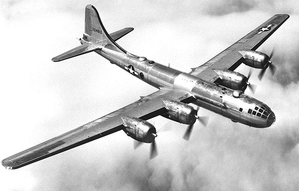
（B-29 轰炸机，绰号“超级空中堡垒”）
一开始，美军使用成都的双流机场进行对日战略轰炸，但是效果非常【不】理想：
其一，成都距离日本太远，B-29 只能轰炸到日本本土的西南地区（冲绳、九州岛、本州岛西南部）；
其二，成都距离日本太远，B-29 需要减少装弹量以加装燃料；
其三，军事物资（弹药和维修的零配件）运往成都很麻烦，需要走“驼峰航线”。
由于上述弊端，从成都起飞进行的战略轰炸，在整个1944年下半年，才搞了10次，累计投弹量仅仅只有800吨——和后面提到的投弹量对比，800吨少得可怜。
在同年的6月份，出现第二个转折点——美军攻占“马里亚纳群岛”。该群岛中的几个大岛是：关岛、塞班岛、提尼安岛（天宁岛）。以这几个岛屿为基地，日本本土正好处于 B-29 的作战范围之内。而且美军可以利用海运把大量的战略物资送到这几个岛屿。
美军花了大半年时间扩建岛上的机场和相关设施，并把成都的 B-29 全部迁移过来。到了1945年初，对日本进行大规模战略轰炸的条件就成熟了。
要聊对日战略轰炸，必须要聊到“柯蒂斯·李梅”（Curtis LeMay）这个人。
此人出身于普通工人家庭，没上过正规军校。他从平凡的 B-17 轰炸机驾驶员开始干起，一路升到将军（二战时，美军航空部队中最年轻的少将）。二战后，官至“空军四星上将”，并负责组建美国的“战略空军司令部”。
柯蒂斯·李梅这人的脑瓜子很灵光，他发明了一种全新的招数用于对日战略轰炸。此招数的关键点如下：
1. 把“炸弹”改为“燃烧弹”（日本城市的建筑物以木结构为主）
2. 把“日间轰炸”改为“夜间轰炸”（日本缺乏雷达和夜航战斗机，夜间的防空力量很弱）
3. 把 B-29 的飞行高度降低至“5000至6000呎”（这个高度是日本防空炮火的断层）
4. 把 B-29 的机关炮和各种弹药都卸掉，腾出载重量用来装燃烧弹（这招很冒险，李梅赌日本的战斗机所剩无几）
事实证明——李梅是个天才。他发明的这种新战术（绰号“李梅火攻”），对日本造成【毁灭性打击】。其破坏程度，远远超过两颗原子弹的总和。B-29 因此被日本人称为【地狱火鸟】。
下面让大伙儿见识一下“李梅火攻”的效果。
第1次“火烧东京”是1945年2月23日，出动174架 B-29，东京约2.56平方公里的市区被焚。但李梅对这个效果不满意。
第2次“火烧东京”是3月9日，当地刮9级大风（据说李梅故意挑大风的日子）。美军出动334架 B-29（数量接近上一次的两倍）。飞抵东京上空后，B-29 投放的燃烧弹呈现一个巨大的“十字”形状——这么干是为了充分利用风力。而且无论风向如何变化，都可以烧毁足够大的面积。
那天的空袭结果，创了人类军事史的记录——史上最具破坏性的“非核武空袭”。有些调查报告甚至认为：那天的死亡人数超过了广岛原子弹。日本官方公布的死亡人数超过8万（但这个数据【没有】包含当地的朝鲜劳工和台湾劳工，也【没有】包括某些失踪人口），另有10万人严重烧伤。
整个东京有41平方公里的面积被焚毁，包括繁华的商业区下町。26万7千多幢建筑付之一炬，上百万人无家可归。
燃烧弹产生高温让东京市区的河流都【沸腾】了。第二天清晨，河面上漂浮着大量【煮熟的尸体】。大火产生强烈的空气对流（洋文叫“Firestorm”），连轰炸机都感受到热浪。（俺曾经看过一篇报道，其中提及）某个美军机组人员说他闻到“烤肉的味道”。
次日早晨，日本天皇从皇宫地下室出来。当他看到东京市区如地狱般恐怖，惊呆了。前面俺提到：天皇至少在4月份就开始推动和谈。原因或许就在这里。
为了让大伙儿意识到战争的残酷性，放几张当年的照片：
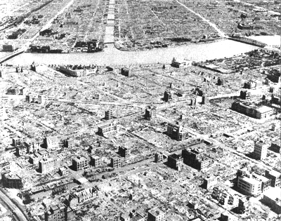
（轰炸过后的东京商业区——下町）
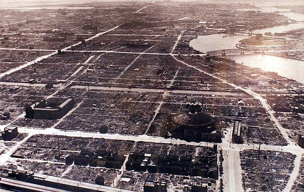
（3月10日拍摄的东京市区——松坂町，元町）
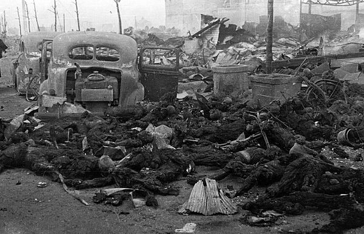
（大量烧成焦炭的尸体）
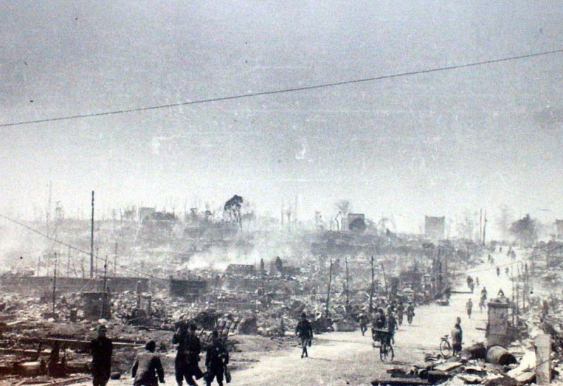
（某街道两侧的废墟）
3月9日之后，美军又多次空袭东京。由于很多东京市民已经疏散，伤亡人数没有超过3月9日那次。经过多次火烧，东京的工业基本被摧毁。
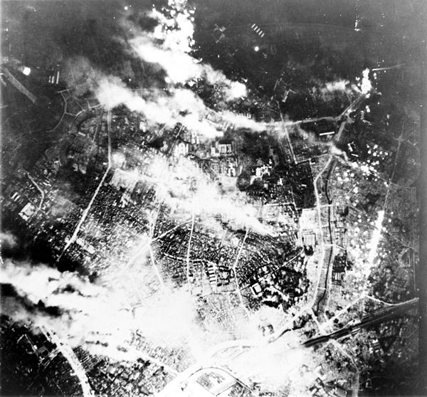
（5月25日对东京的空袭，燃烧弹引发的浓烟覆盖了大部分市区）
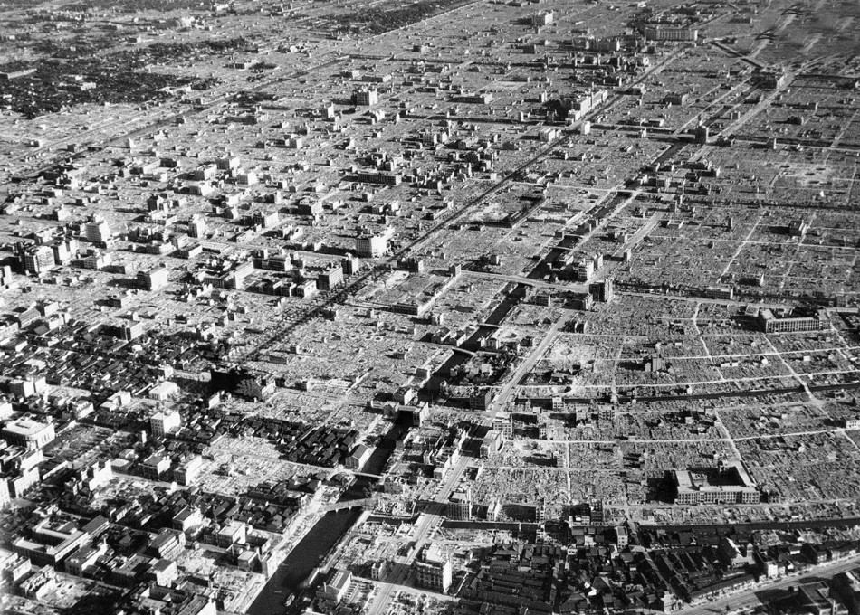
（日本投降后于9月10日拍摄的东京市区照片，大部分市区变成平地，只有少数水泥结构的建筑还立着）
3月9日火烧东京之后，李梅不给日本人以喘息的机会。
3月10日晚，出动317架 B-29 轰炸名古屋；
3月13日晚，出动300架 B-29 轰炸大阪；
3月16日晚，出动400架 B-29 轰炸神户；
......
到了3月19日，李梅不得不暂停空袭——不是因为他心软，而是因为他用力过猛，把库存的燃烧弹全用完了。从3月9日到3月19日（仅仅10天），累计投掷燃烧弹近【1万吨】。
之后，美国本土加大燃烧弹的产量，李梅在4月份恢复对日本大城市的空袭。
截止6月15日，美军共进行了17次大规模轰炸，覆盖日本所有大型城市，而美军只损失136架 B-29。
以下是几张相关的照片：
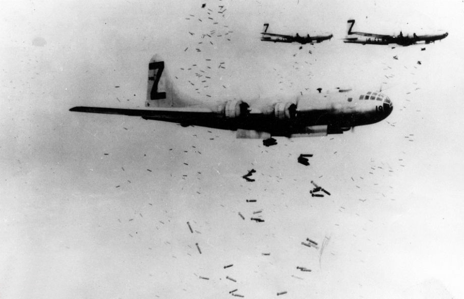
（B-29 机群在横滨上空密集投弹）
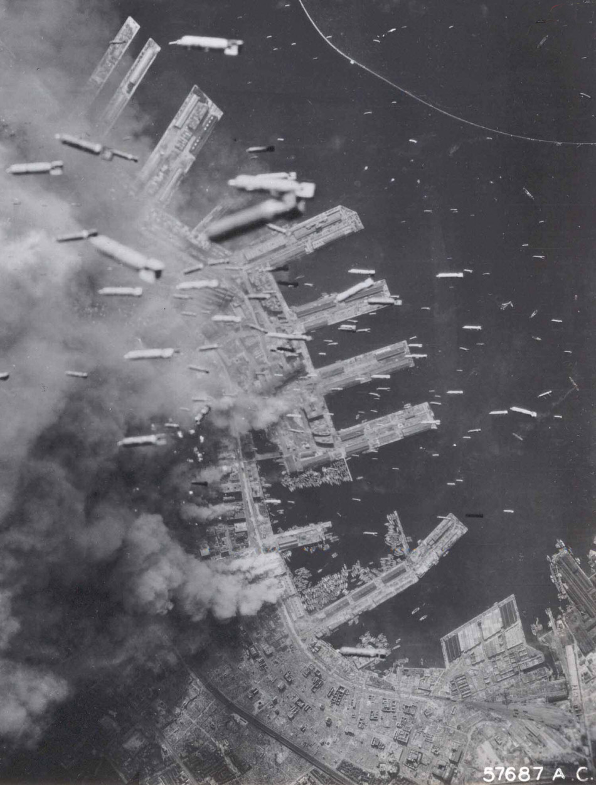
（6月4日空袭神户，密集的燃烧弹投向码头）
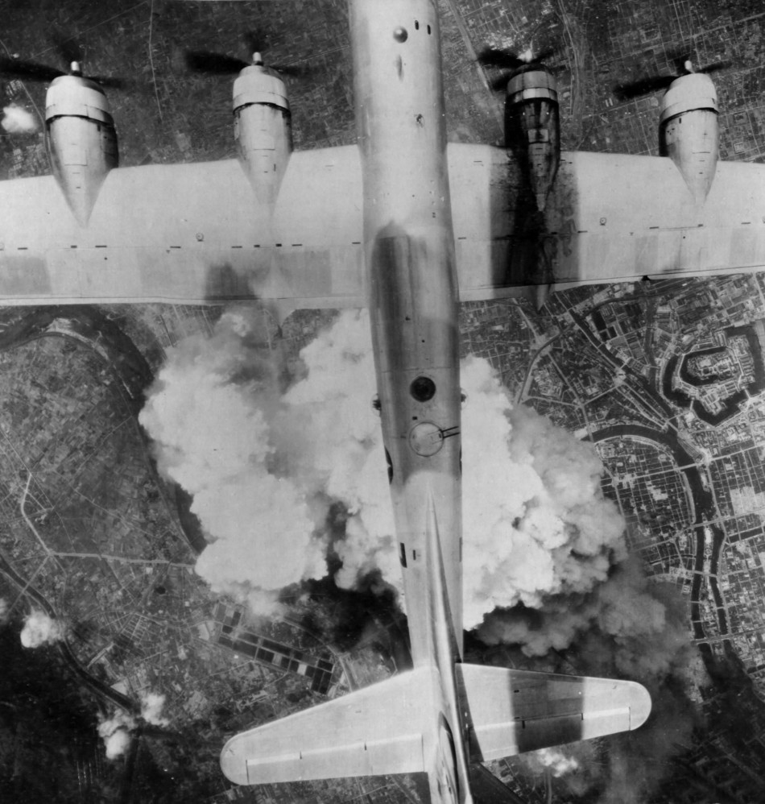
（6月份对大阪的空袭）
6月15日之后，美军的空袭扩大到了中小城市和交通线。
以下是几张相关的照片：
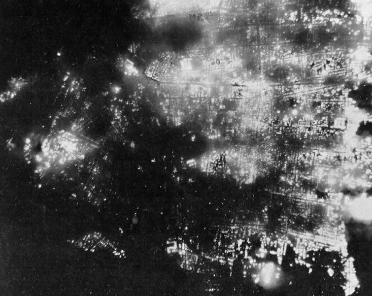
（8月1日空袭日本富山市，图中的亮点是夜间的火光）
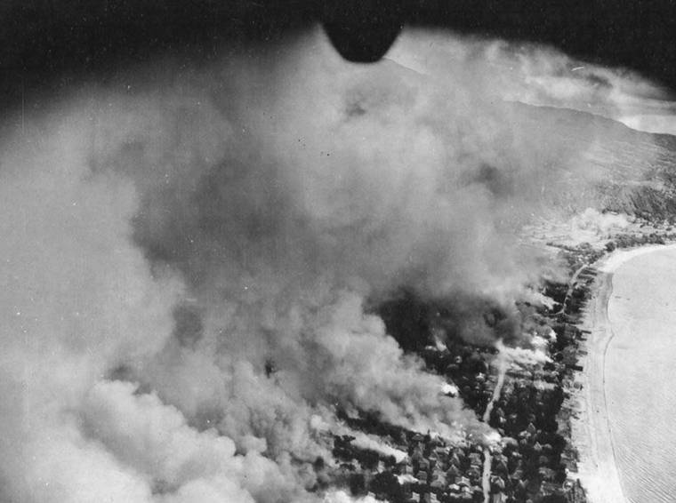
（日本九州岛垂水市遭遇空袭后，大火蔓延）
在日本投降前的最后半年（1945年3月~8月），战略轰炸对日本军工业的破坏如下：
炼油工业产量下降 83%
飞机引擎产量下降 75%
飞机机身产量下降 60%
电子装备产量下降 70%
（以上数据摘自李德·哈特所著的《第二次世界大战战史》第658页。俺的网盘上有此书的电子版）
对工业的打击还不是最关键的。更致命的打击是——动摇了日本的军心/民心。在战略轰炸没有开始之前，虽然日本海军已经在太平洋上吃了多次败仗，但日本普通民众依然深信——大日本皇家必胜。
等到美军进行了几个月的战略轰炸之后，【战败情绪】开始在普通民众当中蔓延。不光民众，连很多军官都开始意识到：这场战争根本没希望打赢。
同样在李德·哈特这本《第二次世界大战战史》中，也提到类似观点：
日本的地缘环境是很倒霉的——它是个岛国，而且极度缺乏资源，很多基本物资（粮食、铁矿、石油、焦炭、橡胶）都需要靠进口。所以，美军在进行战略轰炸的同时，也对日本进行战略封锁——切断日本的海上运输线。
在以往的战争中，“海上封锁”常用的招数是潜艇战（一战和二战都这么干过）。当时日本已经加强了商船的海上护卫，继续用潜艇封锁，效果不理想。于是美军采用一种新的封锁方式——使用水雷封锁日本的航线。该作战计划代号“饥饿”（这个名称很贴切），由美军参谋长联席会议授权尼米兹上将负责。
传统的布雷方式靠的是水面舰艇。由于当时美军已经完全掌握日本本土的制空权，所以尼米兹决定用“空中布雷”的方式，效率比较高。和“焦土轰炸”一样，该任务也是由 B-29 来搞定，具体落实的指挥官依然是李梅（看来他是日本人的克星）。
准备阶段
1945年1月，美国海军的水雷专业人员到达提尼安岛，设立了水雷装配中心。他们负责对水雷触发引信进行调整和改进，以增加日军清扫时的难度；同时为水雷加装降落伞（减缓空投时的下落速度），避免入水时因为压力过大而爆炸。
同样在1月，美军出动 B-29 在越南和新加坡的周边海域布雷（注：这两地尚在日军控制下）。这是美军在二战中首次大规模的航空布雷行动。选择越南和新加坡进行空中布雷，主要是为了进行实战演练。
第1阶段——3月27日至5月2日
出动 B-29 轰炸机246架次，布雷2030枚。
布雷海域：下关海峡、吴港、佐世保军港。
直接效果：日军增援冲绳的“大和舰队”无法经下关海峡南下，改由丰后水道南下。因此，该舰队过早地进入美军飞机的攻击范围。大和号超级战列舰（日本海军最后的家当）被击沉。
第2阶段——5月3日至5月12日
出动 B-29 轰炸机195架次，布雷1422枚（此次布雷开始使用抗扫能力较强的“水压水雷”）。
布雷海域：除继续在下关海峡进行布雷，还在东京、大阪、神户等港口和濑户内海主要航道上布雷。
直接效果：由于濑户内海遭到水雷封锁，从中国东北和朝鲜驶来的许多船只无法进入濑户内海，被迫改到九州或本州西北港口卸货。
第3阶段——5月13日至6月6日
共出动 B-29 轰炸机209架次，布雷1313枚（此次布雷开始使用另一种抗扫能力较强的“低频音响水雷”）。
布雷海域：由于濑户内海遭封锁后，日本船只改往九州或本州西北停靠。所以此次布雷集中在上述水域。
直接效果：日本被迫于5月14日、5月23日、5月27日关闭清水、横滨和东京港。日本与亚洲大陆的海上运输量急剧下降。
第4阶段——6月7日至7月8日
出动 B-29 轰炸机404架次，布雷3542枚。
布雷海域：继续补充日本各个港口的水雷。
直接效果：日本的海上运输量继续猛降。以神户和大阪港为例，5月卸货量为32万吨，而7月仅为4.4万吨，降幅达86%！
第5阶段——7月9日至8月15日
出动 B-29 轰炸机474架次，布雷3746枚。
布雷海域：除了继续在日本港口布雷外，开始在朝鲜的釜山、罗先、马山、元山、兴南、清津等港口布雷。
直接效果：连原先停泊在朝鲜的商船也无法出海。
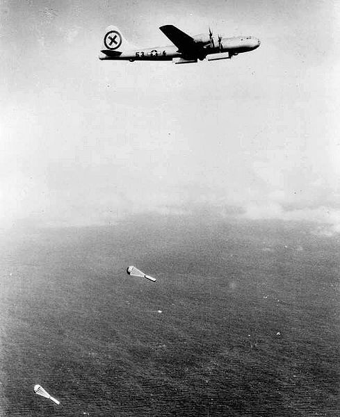
（B-29 正在投放水雷）
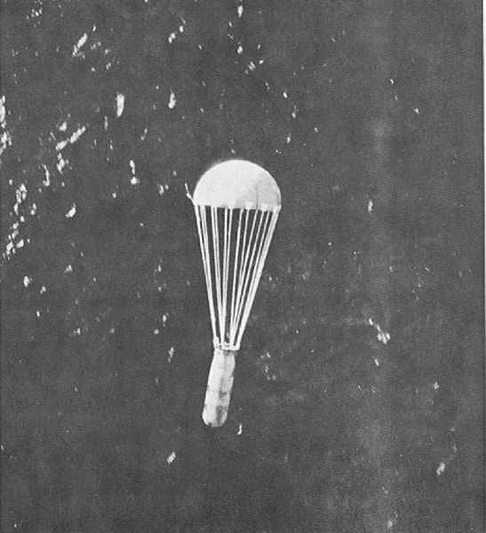
（带有降落伞的水雷）
简而言之：日本的海上生命线基本瘫痪。
这四个半月中，日本的进口物资下降了【至少九成】。很多急需的战略物资（石油、煤炭、铁砂）供应不上，导致军工企业纷纷停产；再加上燃料极度缺乏，日军大批飞机、舰艇被迫停飞、停航。
粮食方面：从中国搜刮来的250万吨大米，堆在朝鲜港口运不出去，而日本国内却闹粮荒。为了优先保证军队口粮，给平民的粮食配给降至最低限度。假如日本没有在8月15日投降，（一段时间之后）连军队的军粮也会短缺。这种情况下，再狂热的武士道精神也无法对抗饥饿。
估计某些读者会纳闷：为啥日本人不采取扫雷措施捏？
在维基百科关于“饥饿行动”的词条，提及如下这段：
为了避免某些读者跟俺抬杠，先声明一下：
此处所说的【必然性】指的是发生的概率非常接近于 100% 以至于此概率与 100% 的差异可以忽略不计。
关于这个论点，强烈建议先看俺另外一篇博文：《聊聊二战中的日本——分析各方面的优势劣势》。那篇博文从多个方面（地理、文化、政治、经济、军事）分析日本在二战时期的优势和劣势。
由于本文重点是谈“导致日本投降”的直接原因，所以对“战败的必然性”，俺在本章节只简单说说”工业实力差异对军事的影响“。
从太平洋战争一开打，日本就一直紧缺几样东西——航空母舰、舰载机、舰载机飞行员。
缺少航空母舰和舰载机，表面原因是——日本的工业实力不如美国；但，即使日本的工业实力跟美国一样好，它造航母的速度还是不如美国，因为日本【本土】缺少很多战略资源（比如铁矿石）。
二战前，日本有非常多优秀的海军飞行员。但是跟美国开打之后，这些优秀的飞行员阵亡一个就少一个（没有得到补充）。为啥捏？因为训练一个优秀的飞行员，需要消耗很多航空燃油。而战争期间，日本的石油很紧缺。所以日本没能补充优秀的舰载机飞行员。
包括日本采用“神风自杀攻击”也是基于此。因为训练自杀式的飞行员要容易得多，（相比训练常规飞行员）所消耗的航空燃油也少得多。
美国的情况正好跟日本相反。二战前，美国无论是航母数量、还是优秀的舰载机飞行员，都远远【不如】日本。但是美国的工业实力世界第一（而且远远超过第二名），美国本土的各种战略资源（媒、铁、石油）都很齐备。另外别忘了，美国的科技实力也远超日本。
结果就是：美国参战时间也就“3年零8个月”，单“护航航母”造了超过100艘，“作战航母”造了30多艘。至于作战飞机更是不计其数。而且还用很快的速度培训了大量优秀的飞行员（美国的训练用油很充足）。
美国在太平洋战争【之前】的航母列表（数量比日本少）
美国在太平洋战争期间【新投入服役】的航母列表（不含超过100艘的“护航航母”）
编程随想注：
1. 航母编号以 CVL 开头的，是轻型航母。
2. 除了上表列出的，尚有9艘作战航母（编号如下）是二战期间开工建造，但投入服役时，日本已经投降。俺就不列出来了。
（CV-32、CV-33、CV-34、CV-37、CV-40、CV-41、CV-42、CV-43、CV-45）
本文发出后，某读者提醒俺补充日本航母的列表，作为对比。于是俺增补了如下几个表格。
日本在太平洋战争【之前】的航母列表（数量比美国多）
日本在太平洋战争期间【新投入服役】的航母列表
日本在太平洋战争期间建造，但是【未完工】的航母列表
偷袭珍珠港之前，日军名将山本五十六就很担心日本的前途。他曾经在哈佛留学而且担任过日本驻美国大使馆的武官，很清楚美国的战争潜力。实际上，他一直反对跟美国开战。但是在当时的日本军部，狂热的少壮派军官已经占据主导。
电影《虎！虎！虎！》中，山本五十六有一句经典台词：
某个军事史学家提到说：
俺认为上述观点非常正确——即使日军的运气足够好，开战时能够把美军的作战航母全部击沉，只需要2年（甚至更短），美国海军的综合实力就会反超。看看上面那个表格，美国海军单单在1943年一年，就有15艘新建的航母投入服役。而且除了航母，美国海军在很多其它方面，也远超日本——具体的分析参见《聊聊二战中的日本——分析各方面的优势劣势》。
俺把这个话题放到本文的末尾来聊，前面的内容相当于铺垫。
要聊“中国战区的意义如何”，可以采用“反向思考”的方式。咱们来假设一下：如果中国战区的最高指挥官老蒋早早就投降日本，对二战的战局会有哪些影响？
编程随想注：
很多读者把“投降”跟“投靠”混为一谈。这两者是完全不同的。本文谈的是“中国战区的作用”。如果老蒋“主动投靠”，那就不是【战区】了。
另外，本文标题的定语是“二战中”，所以这里假设的投降，时间段是指1939年~1945年。
根据《第二次世界大战战史》（第198页）记述：太平洋战争爆发时，日本在满洲有13个师，中国大陆（长城以南）有22个师。
如果整个中国战区沦陷了，那么日本可以把关内（长城以南）的陆军（22个师）抽调到其它地方；但是东北的日军还是要保留（因为驻扎东北的日军，是为了防苏联）。
那么，这些（从关内）抽调出来的日本陆军，能延缓日本的崩溃吗？俺的回答是：不能！下面是俺的分析。
第1点
本文前面已经论证了，导致日本崩溃的【主要】原因是“战略轰炸”和“战略封锁”。
（注：俺当然也承认其它原因的存在，但分析问题要抓主要矛盾）
第2点
美军能够【高效地】实施“战略轰炸”和“战略封锁”，是因为两个条件：其一是 B-29 投入服役；其二是美军攻占几个【关键性岛屿】，作为 B-29 的基地。
补充说明：
某读者留言，认为俺提到的“关键性岛屿”是马后炮。
其实在当年，日本划定了一个【绝对国防圈】，这几个关键性岛屿都包含在内。这几个岛屿失守之后，直接导致东条英机内阁垮台。
由此可见，这几个岛屿的“关键性”，不是俺的马后炮。
第3点
显然，日本无法阻止波音生产的 B-29 投入服役。
所以，日本如果想要延缓崩溃，只能阻止或延缓美军攻占那几个关键性岛屿。
第4点
那么，从中国抽调出来的日本陆军，能否用来加强关键性岛屿的防御捏？俺认为：不能！
因为这几个关键性岛屿，本身都很小（数据如下，摘自维基百科），只能部署【很有限】的地面部队（而且本来已经有部署了）。另外，面积很小的岛屿，【没法】构建纵深防御体系。总而言之，要想守住那几个关键性岛屿，只能靠【打赢航母战】才行；否则的话，再多的地面部队也无济于事。
第5点
从上述这几个步骤的分析，你可以看出——不管中国战区的局势如何，对美国佬的策略（战略轰炸和战略封锁）都不会产生太大影响。换句话说，不管中国战区如何，日本崩溃的时间表【不会】有太大变化。
本文发布后，有很多读者在评论区提问，俺挑选几个有代表性的，补充到博文中。
某些读者问：中华民族付出了几千万军民的伤亡，难道这些牺牲还不足以证明中国对二战的贡献吗？
俺的观点是：
请注意，“牺牲”和“贡献”是两个概念。牺牲大【不等于】贡献大。
某些读者问：如果中国战区的意义不大，那为啥美国要向老蒋提供军事援助？
俺的观点是：
抗战期间美国给中国的援助，主要是“政治意义”而不是“军事意义”。老蒋是美国的政治盟友，如果老蒋让日本人给灭了，美国方面就要重新物色一个新的政治盟友（这就增加了变数和风险）。
某些读者问：二战中，如果日本占领全中国，会大大改变美日双方的实力。
俺的观点是：
二战时，中国本土【尚未】发现油田。而当时日本最急需的是石油。日本冒着巨大风险发动太平洋战争，也是为了东南亚的石油。所以，即使中国倒向日本，对日本而言无法解燃眉之急。而且，当时的中国（满洲除外）只是农业国，缺乏成熟的工业（尤其是军事工业）；至于满洲，二战前已经在日本控制下。
另外，把一个“农业国”转变为“工业国”至少需要20年（注：改革开放花了至少20年才打造了“世界工厂”的地位）。而在美日交战之际，日本不可能争取到如此长的时间窗口去完成中国占领区的工业化。
某些读者问：假如二战刚开始，中国放弃抵抗，马上投降。国家合并后，战争就变成内政问题了。美国能为此而对日本石油禁运吗？
俺的观点是：
这种说法混淆了“投降”与“投靠”。“投降”依然是“被吞并”。“投靠”才属于“两个国家主动合并”。比如欧洲战场上，波兰、荷兰、丹麦等国也是【投降】。但那属于“被吞并”，不是“主动合并”。后来盟军也帮他们复国。
某些读者问：如果老蒋过早投降，有利于德日在中东或南亚会师。
俺的观点是：
“德日会师”的意义并不大。即使真出现这种情况，德日两国也只能维持【脆弱】的“陆上交通线”，而【无法】建立“海上运输线”（即使德日会师，印度洋的制海权肯定还在美英手中）。
单靠维持陆上的联系，【无助于】解决德国与日本在战争中的困境。比如说：日本在二战期间急需的石油，还是无法解决（没有印度洋的制海权，中东的石油无法运回日本）
俺博客上，和本文相关的帖子（需翻墙）：
《聊聊二战中的日本——分析各方面的优势劣势》
《关于抗日战争——谈谈真理部对抗战历史的篡改》
《聊聊“核战略的博弈模型”与“中美新冷战”》
《谁是最可恨的人？——写给仇日愤青们》
《看看真理部是如何 PS 照片的》
《每周转载：关于习呆呆的93大阅兵（各方报道及网友评论）》
《每周转载：关于朝廷对爱国主义的忽悠（网文5篇）》
★对“日本投降”的几种误解
先来看几个日期：
1945年8月6日——美军在广岛投放原子弹
1945年8月8日——苏联对日宣战，出兵满洲国（东北）
1945年8月9日——美军在长崎投放原子弹
1945年8月15日——日本广播《终战诏书》，宣布投降。
由于这几个日期很接近，容易给人造成两种错觉：
错觉1：以为美国扔了原子弹（并造成巨大伤亡），所以日本才投降
错觉2：以为苏联对日宣战（并迅速拿下东北），所以日本才投降
★首先，天皇早有求和的打算
但实际上并非如此。早在1945年4月份到7月份，日本天皇就意识到必定战败，并且持续推动停战和谈。如果仔细了解二战期间日本高层的动态，就可以发现这一点。下面俺举几个例子来说明天皇的意向。
迹象1——铃木组阁
二战期间日本的最后一任内阁是“铃木内阁”，任期是1945年4月7日至8月17日。铃木贯太郎是日本高层中，【主和派】的代表。让这样一个人来组阁，很容易激怒日本军部中的少壮派好战分子。
顺便说一件往事：
1936年，日本一些激进的少壮派军官（皇道派）发动“226兵变”。他们列出一份“7人暗杀名单”，其中就有铃木贯太郎。当时铃木身中2枪，经抢救幸免未死。
试想一下：如果天皇没有停战的意向，怎么会让他来组阁？所以，至少在4月初，天皇就已经意识到：日本再打下去没有希望。
迹象2——天皇的停战通电
可能有的同学会说前一个迹象比较牵强，不够明显。那么俺再来举一个非常明显的例子。
7月12日，日本外相（外交部长）给驻苏联大使发了一个紧急电报（天皇要求停战的通电），要求驻苏联大使转达天皇关于结束战争的意图。当时苏联和日本尚未交战，日本企图让苏联充当中间人，促成日本与美国的和谈。
关于这份“天皇要求停战的通电”，可以参见服部卓四郎写的《大东亚战争全史》第1620页（截图如下）。此人是直接参与二战的军部参谋，这本书对日本方面有详细的记述（已分享到俺的网盘上）。
从上述这几个迹象可以看出——天皇在投降之前好几个月，就意识到日本没戏了。而那时候，美国尚未投放原子弹，苏联也尚未出兵。
所以，原子弹【不是】日本投降的关键性因素；苏联出兵同样【不是】关键性因素。这两件事儿，顶多算是“锦上添花”而已。那么，促使日本投降的关键性因素是啥捏？下面俺来介绍一下。
★日本投降的关键性因素——战略轰炸（焦土战术）
在欧洲战场，同盟国（美、英、苏）很早就对德国进行战略轰炸，而且效果还不错。很自然的，美军也想对日本搞战略轰炸。之所以一直没搞成，是因为美军的基地距离日本本土太远了（超出了美军轰炸机的作战半径）。而航母又不适合用来搞战略轰炸。
到了1944年，出现两个转折点：
◇转折点1——B-29 服役
1944年5月份，波音生产的 B-29 轰炸机投入服役。这玩意儿是二战中最先进的轰炸机，各项指标（续航距离、飞行高度、飞行速度、载重量、火控系统）都名列第一。于是美军就拥有了对日进行战略轰炸的利器。
（B-29 轰炸机，绰号“超级空中堡垒”）
一开始，美军使用成都的双流机场进行对日战略轰炸，但是效果非常【不】理想：
其一，成都距离日本太远，B-29 只能轰炸到日本本土的西南地区（冲绳、九州岛、本州岛西南部）；
其二，成都距离日本太远，B-29 需要减少装弹量以加装燃料；
其三，军事物资（弹药和维修的零配件）运往成都很麻烦，需要走“驼峰航线”。
由于上述弊端，从成都起飞进行的战略轰炸，在整个1944年下半年，才搞了10次，累计投弹量仅仅只有800吨——和后面提到的投弹量对比，800吨少得可怜。
◇转折点2——美军攻占“马里亚纳群岛”
在同年的6月份，出现第二个转折点——美军攻占“马里亚纳群岛”。该群岛中的几个大岛是：关岛、塞班岛、提尼安岛（天宁岛）。以这几个岛屿为基地，日本本土正好处于 B-29 的作战范围之内。而且美军可以利用海运把大量的战略物资送到这几个岛屿。
美军花了大半年时间扩建岛上的机场和相关设施，并把成都的 B-29 全部迁移过来。到了1945年初，对日本进行大规模战略轰炸的条件就成熟了。
◇关键人物——柯蒂斯·李梅
要聊对日战略轰炸，必须要聊到“柯蒂斯·李梅”（Curtis LeMay）这个人。
此人出身于普通工人家庭，没上过正规军校。他从平凡的 B-17 轰炸机驾驶员开始干起，一路升到将军（二战时，美军航空部队中最年轻的少将）。二战后，官至“空军四星上将”，并负责组建美国的“战略空军司令部”。
柯蒂斯·李梅这人的脑瓜子很灵光，他发明了一种全新的招数用于对日战略轰炸。此招数的关键点如下：
1. 把“炸弹”改为“燃烧弹”（日本城市的建筑物以木结构为主）
2. 把“日间轰炸”改为“夜间轰炸”（日本缺乏雷达和夜航战斗机，夜间的防空力量很弱）
3. 把 B-29 的飞行高度降低至“5000至6000呎”（这个高度是日本防空炮火的断层）
4. 把 B-29 的机关炮和各种弹药都卸掉，腾出载重量用来装燃烧弹（这招很冒险，李梅赌日本的战斗机所剩无几）
事实证明——李梅是个天才。他发明的这种新战术（绰号“李梅火攻”），对日本造成【毁灭性打击】。其破坏程度，远远超过两颗原子弹的总和。B-29 因此被日本人称为【地狱火鸟】。
下面让大伙儿见识一下“李梅火攻”的效果。
◇火烧东京
第1次“火烧东京”是1945年2月23日，出动174架 B-29，东京约2.56平方公里的市区被焚。但李梅对这个效果不满意。
第2次“火烧东京”是3月9日，当地刮9级大风（据说李梅故意挑大风的日子）。美军出动334架 B-29（数量接近上一次的两倍）。飞抵东京上空后，B-29 投放的燃烧弹呈现一个巨大的“十字”形状——这么干是为了充分利用风力。而且无论风向如何变化，都可以烧毁足够大的面积。
那天的空袭结果，创了人类军事史的记录——史上最具破坏性的“非核武空袭”。有些调查报告甚至认为：那天的死亡人数超过了广岛原子弹。日本官方公布的死亡人数超过8万（但这个数据【没有】包含当地的朝鲜劳工和台湾劳工，也【没有】包括某些失踪人口），另有10万人严重烧伤。
整个东京有41平方公里的面积被焚毁，包括繁华的商业区下町。26万7千多幢建筑付之一炬，上百万人无家可归。
燃烧弹产生高温让东京市区的河流都【沸腾】了。第二天清晨，河面上漂浮着大量【煮熟的尸体】。大火产生强烈的空气对流（洋文叫“Firestorm”），连轰炸机都感受到热浪。（俺曾经看过一篇报道，其中提及）某个美军机组人员说他闻到“烤肉的味道”。
次日早晨，日本天皇从皇宫地下室出来。当他看到东京市区如地狱般恐怖，惊呆了。前面俺提到：天皇至少在4月份就开始推动和谈。原因或许就在这里。
为了让大伙儿意识到战争的残酷性，放几张当年的照片：
（轰炸过后的东京商业区——下町）
（3月10日拍摄的东京市区——松坂町，元町）
（大量烧成焦炭的尸体）
（某街道两侧的废墟）
3月9日之后，美军又多次空袭东京。由于很多东京市民已经疏散，伤亡人数没有超过3月9日那次。经过多次火烧，东京的工业基本被摧毁。
（5月25日对东京的空袭，燃烧弹引发的浓烟覆盖了大部分市区）
（日本投降后于9月10日拍摄的东京市区照片，大部分市区变成平地，只有少数水泥结构的建筑还立着）
◇对其它大型城市的火攻
3月9日火烧东京之后，李梅不给日本人以喘息的机会。
3月10日晚，出动317架 B-29 轰炸名古屋；
3月13日晚，出动300架 B-29 轰炸大阪；
3月16日晚，出动400架 B-29 轰炸神户；
......
到了3月19日，李梅不得不暂停空袭——不是因为他心软，而是因为他用力过猛，把库存的燃烧弹全用完了。从3月9日到3月19日（仅仅10天），累计投掷燃烧弹近【1万吨】。
之后，美国本土加大燃烧弹的产量，李梅在4月份恢复对日本大城市的空袭。
截止6月15日，美军共进行了17次大规模轰炸，覆盖日本所有大型城市，而美军只损失136架 B-29。
以下是几张相关的照片：
（B-29 机群在横滨上空密集投弹）
（6月4日空袭神户，密集的燃烧弹投向码头）
（6月份对大阪的空袭）
◇对中型城市的火攻
6月15日之后，美军的空袭扩大到了中小城市和交通线。
以下是几张相关的照片：
（8月1日空袭日本富山市，图中的亮点是夜间的火光）
（日本九州岛垂水市遭遇空袭后，大火蔓延）
◇“焦土轰炸”的战略意义
在日本投降前的最后半年（1945年3月~8月），战略轰炸对日本军工业的破坏如下：
炼油工业产量下降 83%
飞机引擎产量下降 75%
飞机机身产量下降 60%
电子装备产量下降 70%
（以上数据摘自李德·哈特所著的《第二次世界大战战史》第658页。俺的网盘上有此书的电子版）
对工业的打击还不是最关键的。更致命的打击是——动摇了日本的军心/民心。在战略轰炸没有开始之前，虽然日本海军已经在太平洋上吃了多次败仗，但日本普通民众依然深信——大日本皇家必胜。
等到美军进行了几个月的战略轰炸之后，【战败情绪】开始在普通民众当中蔓延。不光民众，连很多军官都开始意识到：这场战争根本没希望打赢。
同样在李德·哈特这本《第二次世界大战战史》中，也提到类似观点：
尤其是轰炸作战的事实使得日本人民认清：他们的军队已经不能再保护他们。于是投降，甚至于无条件的投降，也都无可避免。8月间的原子弹不过是再次确实证明大多数日本人民（除了疯狂的军国主义者以外）所早已认清的事实而已。
★日本投降的关键性因素——战略封锁（饥饿战术）
◇概述
日本的地缘环境是很倒霉的——它是个岛国，而且极度缺乏资源，很多基本物资（粮食、铁矿、石油、焦炭、橡胶）都需要靠进口。所以，美军在进行战略轰炸的同时，也对日本进行战略封锁——切断日本的海上运输线。
在以往的战争中，“海上封锁”常用的招数是潜艇战（一战和二战都这么干过）。当时日本已经加强了商船的海上护卫，继续用潜艇封锁，效果不理想。于是美军采用一种新的封锁方式——使用水雷封锁日本的航线。该作战计划代号“饥饿”（这个名称很贴切），由美军参谋长联席会议授权尼米兹上将负责。
传统的布雷方式靠的是水面舰艇。由于当时美军已经完全掌握日本本土的制空权，所以尼米兹决定用“空中布雷”的方式，效率比较高。和“焦土轰炸”一样，该任务也是由 B-29 来搞定，具体落实的指挥官依然是李梅（看来他是日本人的克星）。
◇实施过程
准备阶段
1945年1月，美国海军的水雷专业人员到达提尼安岛，设立了水雷装配中心。他们负责对水雷触发引信进行调整和改进，以增加日军清扫时的难度；同时为水雷加装降落伞（减缓空投时的下落速度），避免入水时因为压力过大而爆炸。
同样在1月，美军出动 B-29 在越南和新加坡的周边海域布雷（注：这两地尚在日军控制下）。这是美军在二战中首次大规模的航空布雷行动。选择越南和新加坡进行空中布雷，主要是为了进行实战演练。
第1阶段——3月27日至5月2日
出动 B-29 轰炸机246架次，布雷2030枚。
布雷海域：下关海峡、吴港、佐世保军港。
直接效果：日军增援冲绳的“大和舰队”无法经下关海峡南下，改由丰后水道南下。因此，该舰队过早地进入美军飞机的攻击范围。大和号超级战列舰（日本海军最后的家当）被击沉。
第2阶段——5月3日至5月12日
出动 B-29 轰炸机195架次，布雷1422枚（此次布雷开始使用抗扫能力较强的“水压水雷”）。
布雷海域：除继续在下关海峡进行布雷，还在东京、大阪、神户等港口和濑户内海主要航道上布雷。
直接效果：由于濑户内海遭到水雷封锁，从中国东北和朝鲜驶来的许多船只无法进入濑户内海，被迫改到九州或本州西北港口卸货。
第3阶段——5月13日至6月6日
共出动 B-29 轰炸机209架次，布雷1313枚（此次布雷开始使用另一种抗扫能力较强的“低频音响水雷”）。
布雷海域：由于濑户内海遭封锁后，日本船只改往九州或本州西北停靠。所以此次布雷集中在上述水域。
直接效果：日本被迫于5月14日、5月23日、5月27日关闭清水、横滨和东京港。日本与亚洲大陆的海上运输量急剧下降。
第4阶段——6月7日至7月8日
出动 B-29 轰炸机404架次，布雷3542枚。
布雷海域：继续补充日本各个港口的水雷。
直接效果：日本的海上运输量继续猛降。以神户和大阪港为例，5月卸货量为32万吨，而7月仅为4.4万吨，降幅达86%！
第5阶段——7月9日至8月15日
出动 B-29 轰炸机474架次，布雷3746枚。
布雷海域：除了继续在日本港口布雷外，开始在朝鲜的釜山、罗先、马山、元山、兴南、清津等港口布雷。
直接效果：连原先停泊在朝鲜的商船也无法出海。
（B-29 正在投放水雷）
（带有降落伞的水雷）
◇“饥饿行动”的战略意义
简而言之：日本的海上生命线基本瘫痪。
这四个半月中，日本的进口物资下降了【至少九成】。很多急需的战略物资（石油、煤炭、铁砂）供应不上，导致军工企业纷纷停产；再加上燃料极度缺乏，日军大批飞机、舰艇被迫停飞、停航。
粮食方面：从中国搜刮来的250万吨大米，堆在朝鲜港口运不出去，而日本国内却闹粮荒。为了优先保证军队口粮，给平民的粮食配给降至最低限度。假如日本没有在8月15日投降，（一段时间之后）连军队的军粮也会短缺。这种情况下，再狂热的武士道精神也无法对抗饥饿。
◇补充说明
估计某些读者会纳闷：为啥日本人不采取扫雷措施捏？
在维基百科关于“饥饿行动”的词条，提及如下这段：
当时美国海军正开发各种不同的水雷,有磁力引爆的 M4 以及 M11、利用磁力、音响、水压的互换性引爆的 M9、磁力／水压并用的 A6 等。各种水雷被广泛应用在此次作战计划。现在你是否深刻体会到——【科技是第一生产力】。技术不行，战争中就会被别人玩死。
日本海军总共使用了2至5套扫雷方式来针对磁力水雷，并且使用音爆弹引爆音响水雷，但却并未有效采取针对“水压水雷”以及“低频音响水雷”的扫雷手法。
★日本战败的【必然性】
为了避免某些读者跟俺抬杠，先声明一下：
此处所说的【必然性】指的是发生的概率非常接近于 100% 以至于此概率与 100% 的差异可以忽略不计。
关于这个论点，强烈建议先看俺另外一篇博文：《聊聊二战中的日本——分析各方面的优势劣势》。那篇博文从多个方面（地理、文化、政治、经济、军事）分析日本在二战时期的优势和劣势。
由于本文重点是谈“导致日本投降”的直接原因，所以对“战败的必然性”，俺在本章节只简单说说”工业实力差异对军事的影响“。
◇日本军事上的【弱点】
从太平洋战争一开打，日本就一直紧缺几样东西——航空母舰、舰载机、舰载机飞行员。
缺少航空母舰和舰载机，表面原因是——日本的工业实力不如美国；但，即使日本的工业实力跟美国一样好，它造航母的速度还是不如美国，因为日本【本土】缺少很多战略资源（比如铁矿石）。
二战前，日本有非常多优秀的海军飞行员。但是跟美国开打之后，这些优秀的飞行员阵亡一个就少一个（没有得到补充）。为啥捏？因为训练一个优秀的飞行员，需要消耗很多航空燃油。而战争期间，日本的石油很紧缺。所以日本没能补充优秀的舰载机飞行员。
包括日本采用“神风自杀攻击”也是基于此。因为训练自杀式的飞行员要容易得多，（相比训练常规飞行员）所消耗的航空燃油也少得多。
◇美国军事上的强项
美国的情况正好跟日本相反。二战前，美国无论是航母数量、还是优秀的舰载机飞行员，都远远【不如】日本。但是美国的工业实力世界第一（而且远远超过第二名），美国本土的各种战略资源（媒、铁、石油）都很齐备。另外别忘了，美国的科技实力也远超日本。
结果就是：美国参战时间也就“3年零8个月”，单“护航航母”造了超过100艘，“作战航母”造了30多艘。至于作战飞机更是不计其数。而且还用很快的速度培训了大量优秀的飞行员（美国的训练用油很充足）。
美国在太平洋战争【之前】的航母列表（数量比日本少）
| 编号 | 名称 | 开工日期 | 下水日期 | 服役日期 | 备注 |
|---|---|---|---|---|---|
| CV-1 | 兰利号 | 1911年10月18日 | 1912年8月14日 | 1922年3月20日 | 由运煤舰改装，被日军重创，自沉 |
| CV-2 | 列克星敦号 | 1921年1月8日 | 1925年10月3日 | 1927年12月14日 | 珊瑚海海战被日军击沉 |
| CV-3 | 萨拉托加号 | 1920年9月25日 | 1925年4月7日 | 1927年11月16日 | 1946年退役 |
| CV-4 | 突击者号 | 1931年9月26日 | 1933年2月25日 | 1934年6月4日 | 1946年退役 |
| CV-5 | 约克城号 | 1934年5月21日 | 1936年4月4日 | 1937年9月30日 | 中途岛海战被日军击沉 |
| CV-6 | 企业号 | 1934年7月16日 | 1936年10月3日 | 1938年5月12日 | 冲绳战役被2驾神风自杀飞机重创，1947年退役 |
| CV-7 | 胡蜂号 | 1936年4月1日 | 1939年4月4日 | 1940年4月25日 | 萨沃岛海战被日军击沉 |
| CV-8 | 大黄蜂号 | 1939年9月25日 | 1940年12月14日 | 1941年10月20日 | 圣克鲁兹海战被日军击沉 |
美国在太平洋战争期间【新投入服役】的航母列表（不含超过100艘的“护航航母”）
| 编号 | 名称 | 开工日期 | 下水日期 | 服役日期 | 备注 |
|---|---|---|---|---|---|
| CV-9 | 埃塞克斯号 | 1941年4月28日 | 1942年7月31日 | 1942年12月31日 | 1969年退役 |
| CV-10 | 约克城号 | 1941年12月1日 | 1943年1月21日 | 1943年4月15日 | 与CV-5同名，1970年退役 |
| CV-11 | 无畏号 | 1941年12月1日 | 1943年4月26日 | 1943年8月16日 | 冲绳战役被神风自杀飞机重创，1974年退役 |
| CV-12 | 大黄蜂号 | 1942年8月3日 | 1943年8月30日 | 1943年11月29日 | 与CV-8同名，1970年退役 |
| CV-13 | 富兰克林号 | 1942年12月7日 | 1943年10月14日 | 1944年1月31日 | 被神风自杀飞机重创，1947年退役 |
| CV-14 | 提康德罗加号 | 1943年3月1日 | 1944年2月7日 | 1944年5月8日 | 共受3驾神风自杀飞机重创，1973年退役 |
| CV-15 | 伦道夫号 | 1943年5月10日 | 1944年6月28日 | 1944年10月9日 | 1969年退役 |
| CV-16 | 列克星敦号 | 1941年7月15日 | 1942年9月26日 | 1943年2月17日 | 与CV-2同名，多次受伤，1991年退役 |
| CV-17 | 碉堡山号 | 1941年9月15日 | 1942年12月7日 | 1943年5月24日 | 冲绳战役被2驾神风自杀飞机重创，1947年退役 |
| CV-18 | 胡蜂号 | 1942年3月18日 | 1943年8月17日 | 1943年11月24日 | 与CV-7同名，1972年退役 |
| CV-19 | 汉考克号 | 1943年1月26日 | 1944年1月24日 | 1944年4月15日 | 坊之岬海战被神风自杀飞机重创，1976年退役 |
| CV-20 | 本宁顿号 | 1942年12月15日 | 1944年2月26日 | 1944年8月6日 | 1970年退役 |
| CV-21 | 拳师号 | 1943年9月13日 | 1944年12月14日 | 1945年4月16日 | 1969年退役 |
| CVL-22 | 独立号 | 1941年5月1日 | 1942年8月22日 | 1943年1月14日 | 二战后用作核弹试验的靶舰 |
| CVL-23 | 普林斯顿号 | 1941年6月2日 | 1942年10月18日 | 1943年2月25日 | 莱特湾海战被日军舰载机重创，后自沉 |
| CVL-24 | 贝劳森林号 | 1941年8月11日 | 1942年12月6日 | 1943年3月31日 | 1960年退役 |
| CVL-25 | 科本斯号 | 1941年11月7日 | 1943年1月17日 | 1943年5月28日 | 1947年退役 |
| CVL-26 | 蒙特利号 | 1941年12月29日 | 1943年2月28日 | 1943年6月17日 | 1956年退役 |
| CVL-27 | 兰利号 | 1942年4月11日 | 1943年5月22日 | 1943年8月31日 | 1947年退役 |
| CVL-28 | 卡伯特号 | 1942年3月16日 | 1943年4月4日 | 1943年7月24日 | 1967年借给西班牙，1989年退役 |
| CVL-29 | 巴丹号 | 1942年8月31日 | 1943年8月1日 | 1943年11月17日 | 1954年退役 |
| CVL-30 | 圣哈辛托号 | 1942年10月26日 | 1943年9月26日 | 1943年11月15日 | 1947年退役 |
| CV-31 | 好人理查德号 | 1943年2月1日 | 1944年4月29日 | 1944年11月26日 | 1971年退役 |
| CV-36 | 安提坦号 | 1943年5月15日 | 1944年8月20日 | 1945年1月28日 | 1963年退役 |
| CV-38 | 香格里拉号 | 1943年1月15日 | 1944年2月24日 | 1944年9月15日 | 1971年退役 |
| CV-39 | 尚普兰湖号 | 1943年3月15日 | 1944年11月2日 | 1945年6月3日 | 1966年退役 |
编程随想注：
1. 航母编号以 CVL 开头的，是轻型航母。
2. 除了上表列出的，尚有9艘作战航母（编号如下）是二战期间开工建造，但投入服役时，日本已经投降。俺就不列出来了。
（CV-32、CV-33、CV-34、CV-37、CV-40、CV-41、CV-42、CV-43、CV-45）
本文发出后，某读者提醒俺补充日本航母的列表，作为对比。于是俺增补了如下几个表格。
日本在太平洋战争【之前】的航母列表（数量比美国多）
| 名称 | 开工日期 | 下水日期 | 服役日期 | 备注 |
|---|---|---|---|---|
| 凤翔号 | 1920年12月16日 | 1921年11月13日 | 1922年12月22日 | 中途岛海战后，转作训练船，1946拆解 |
| 赤城号 | 1920年12月6日 | 1925年4月22日 | 1927年3月25日 | 中途岛海战被美军舰载机击沉 |
| 加贺号 | 1920年7月19日 | 1921年11月17日 | 1928年3月31日 | 中途岛海战被美军舰载机击沉 |
| 龙骧号 | 1929年11月26日 | 1931年4月2日 | 1933年5月9日 | 东所罗门海战被美军舰载机击沉 |
| 苍龙号 | 1934年11月20日 | 1935年12月23日 | 1937年12月29日 | 中途岛海战被美军舰载机击沉 |
| 千岁号 | 1934年11月26日 | 1936年11月29日 | 1938年7月25日 | 由水上机母舰改造，莱特湾海战被美军击沉 |
| 千代田号 | 1936年12月14日 | 1937年11月19日 | 1938年12月15日 | 由水上机母舰改造，莱特湾海战被美军击沉 |
| 飞龙号 | 1936年7月8日 | 1937年11月16日 | 1939年7月5日 | 中途岛海战被美军舰载机击沉 |
| 瑞凤号 | 1935年6月20日 | 1936年6月19日 | 1940年12月27日 | 莱特湾海战被美军舰载机击沉 |
| 翔鹤号 | 1937年12月12日 | 1939年6月1日 | 1941年8月8日 | 菲律宾海战被美军潜艇击沉 |
| 瑞鹤号 | 1938年5月25日 | 1939年11月27日 | 1941年9月25日 | 莱特湾海战被美军舰载机击沉 |
日本在太平洋战争期间【新投入服役】的航母列表
| 名称 | 开工日期 | 下水日期 | 服役日期 | 备注 |
|---|---|---|---|---|
| 祥凤号 | 1934年12月3日 | 1935年6月1日 | 1942年1月26日 | 珊瑚海海战被美军舰载机击沉 |
| 龙凤号 | 1933年4月12日 | 1933年11月16日 | 1942年11月28日 | 由潜水母舰改造，停泊港内遭美军空袭重创，废弃 |
| 大凤号 | 1941年7月10日 | 1943年4月7日 | 1944年3月7日 | 菲律宾海战被美军潜艇击沉（仅仅中一枚鱼雷） |
| 云龙号 | 1942年8月1日 | 1943年9月25日 | 1944年8月6日 | 遭遇美军潜艇被击沉 |
| 天城号 | 1942年10月1日 | 1943年10月15日 | 1944年8月10日 | 停泊港内遭美军空袭炸沉 |
| 葛城号 | 1942年12月8日 | 1944年1月19日 | 1944年10月 | 因燃料不足，从未作战，1946拆解 |
| 信浓号 | 1940年5月4日 | 1944年10月8日 | 1944年11月19日 | 遭遇美军潜艇被击沉 |
日本在太平洋战争期间建造，但是【未完工】的航母列表
| 名称 | 开工日期 | 下水日期 | 备注 |
|---|---|---|---|
| 笠置号 | 1943年4月14日 | 1944年10月19日 | 1945年4月停工 |
| 阿苏号 | 1943年6月8日 | 1944年11月17日 | 1944年11月停工 |
| 生驹号 | 1943年7月5日 | 1944年11月17日 | 1944年11月停工 |
| 伊吹号 | 1942年4月24日 | 1943年5月21日 | 1945年3月停工 |
◇日本有打赢或打平的可能性吗？
偷袭珍珠港之前，日军名将山本五十六就很担心日本的前途。他曾经在哈佛留学而且担任过日本驻美国大使馆的武官，很清楚美国的战争潜力。实际上，他一直反对跟美国开战。但是在当时的日本军部，狂热的少壮派军官已经占据主导。
电影《虎！虎！虎！》中，山本五十六有一句经典台词：
我们惊醒了沉睡的巨人，现在他已怒不可遏。（这句话应该是编剧虚构滴，但可以大致反映出山本五十六的真实想法）
某个军事史学家提到说：
不论日军击中的是修理篷还是航空母舰，对珍珠港的袭击本身就已经决定了日本战败的命运。
俺认为上述观点非常正确——即使日军的运气足够好，开战时能够把美军的作战航母全部击沉，只需要2年（甚至更短），美国海军的综合实力就会反超。看看上面那个表格，美国海军单单在1943年一年，就有15艘新建的航母投入服役。而且除了航母，美国海军在很多其它方面，也远超日本——具体的分析参见《聊聊二战中的日本——分析各方面的优势劣势》。
★中国战区的意义，到底有多大？
俺把这个话题放到本文的末尾来聊，前面的内容相当于铺垫。
◇俺的分析
要聊“中国战区的意义如何”，可以采用“反向思考”的方式。咱们来假设一下：如果中国战区的最高指挥官老蒋早早就投降日本，对二战的战局会有哪些影响？
编程随想注：
很多读者把“投降”跟“投靠”混为一谈。这两者是完全不同的。本文谈的是“中国战区的作用”。如果老蒋“主动投靠”，那就不是【战区】了。
另外，本文标题的定语是“二战中”，所以这里假设的投降，时间段是指1939年~1945年。
根据《第二次世界大战战史》（第198页）记述：太平洋战争爆发时，日本在满洲有13个师，中国大陆（长城以南）有22个师。
如果整个中国战区沦陷了，那么日本可以把关内（长城以南）的陆军（22个师）抽调到其它地方；但是东北的日军还是要保留（因为驻扎东北的日军，是为了防苏联）。
那么，这些（从关内）抽调出来的日本陆军，能延缓日本的崩溃吗？俺的回答是：不能！下面是俺的分析。
第1点
本文前面已经论证了，导致日本崩溃的【主要】原因是“战略轰炸”和“战略封锁”。
（注：俺当然也承认其它原因的存在，但分析问题要抓主要矛盾）
第2点
美军能够【高效地】实施“战略轰炸”和“战略封锁”，是因为两个条件：其一是 B-29 投入服役；其二是美军攻占几个【关键性岛屿】，作为 B-29 的基地。
补充说明：
某读者留言，认为俺提到的“关键性岛屿”是马后炮。
其实在当年，日本划定了一个【绝对国防圈】，这几个关键性岛屿都包含在内。这几个岛屿失守之后，直接导致东条英机内阁垮台。
由此可见，这几个岛屿的“关键性”，不是俺的马后炮。
第3点
显然，日本无法阻止波音生产的 B-29 投入服役。
所以，日本如果想要延缓崩溃，只能阻止或延缓美军攻占那几个关键性岛屿。
第4点
那么，从中国抽调出来的日本陆军，能否用来加强关键性岛屿的防御捏？俺认为：不能！
因为这几个关键性岛屿，本身都很小（数据如下，摘自维基百科），只能部署【很有限】的地面部队（而且本来已经有部署了）。另外，面积很小的岛屿，【没法】构建纵深防御体系。总而言之，要想守住那几个关键性岛屿，只能靠【打赢航母战】才行；否则的话，再多的地面部队也无济于事。
塞班岛120平方公里
提尼安岛（天宁岛）101平方公里
硫磺岛22平方公里
（作为对比，长江口的崇明岛1225平方公里）
第5点
从上述这几个步骤的分析，你可以看出——不管中国战区的局势如何，对美国佬的策略（战略轰炸和战略封锁）都不会产生太大影响。换句话说，不管中国战区如何，日本崩溃的时间表【不会】有太大变化。
◇补充说明——答读者问
本文发布后，有很多读者在评论区提问，俺挑选几个有代表性的，补充到博文中。
某些读者问：中华民族付出了几千万军民的伤亡，难道这些牺牲还不足以证明中国对二战的贡献吗？
俺的观点是：
请注意，“牺牲”和“贡献”是两个概念。牺牲大【不等于】贡献大。
某些读者问：如果中国战区的意义不大，那为啥美国要向老蒋提供军事援助？
俺的观点是：
抗战期间美国给中国的援助，主要是“政治意义”而不是“军事意义”。老蒋是美国的政治盟友，如果老蒋让日本人给灭了，美国方面就要重新物色一个新的政治盟友（这就增加了变数和风险）。
某些读者问：二战中，如果日本占领全中国，会大大改变美日双方的实力。
俺的观点是：
二战时，中国本土【尚未】发现油田。而当时日本最急需的是石油。日本冒着巨大风险发动太平洋战争，也是为了东南亚的石油。所以，即使中国倒向日本，对日本而言无法解燃眉之急。而且，当时的中国（满洲除外）只是农业国，缺乏成熟的工业（尤其是军事工业）；至于满洲，二战前已经在日本控制下。
另外，把一个“农业国”转变为“工业国”至少需要20年（注：改革开放花了至少20年才打造了“世界工厂”的地位）。而在美日交战之际，日本不可能争取到如此长的时间窗口去完成中国占领区的工业化。
某些读者问：假如二战刚开始，中国放弃抵抗，马上投降。国家合并后，战争就变成内政问题了。美国能为此而对日本石油禁运吗？
俺的观点是：
这种说法混淆了“投降”与“投靠”。“投降”依然是“被吞并”。“投靠”才属于“两个国家主动合并”。比如欧洲战场上，波兰、荷兰、丹麦等国也是【投降】。但那属于“被吞并”，不是“主动合并”。后来盟军也帮他们复国。
某些读者问：如果老蒋过早投降，有利于德日在中东或南亚会师。
俺的观点是：
“德日会师”的意义并不大。即使真出现这种情况，德日两国也只能维持【脆弱】的“陆上交通线”，而【无法】建立“海上运输线”（即使德日会师，印度洋的制海权肯定还在美英手中）。
单靠维持陆上的联系，【无助于】解决德国与日本在战争中的困境。比如说：日本在二战期间急需的石油，还是无法解决（没有印度洋的制海权，中东的石油无法运回日本）
俺博客上，和本文相关的帖子（需翻墙）：
《聊聊二战中的日本——分析各方面的优势劣势》
《关于抗日战争——谈谈真理部对抗战历史的篡改》
《聊聊“核战略的博弈模型”与“中美新冷战”》
《谁是最可恨的人？——写给仇日愤青们》
《看看真理部是如何 PS 照片的》
《每周转载：关于习呆呆的93大阅兵（各方报道及网友评论）》
《每周转载：关于朝廷对爱国主义的忽悠（网文5篇）》
版权声明
本博客所有的原创文章，作者皆保留版权。转载必须包含本声明，保持本文完整，并以超链接形式注明作者编程随想和本文原始地址：
https://program-think.blogspot.com/2015/09/Why-did-Japan-Surrender-in-WW2.html
本博客所有的原创文章，作者皆保留版权。转载必须包含本声明，保持本文完整，并以超链接形式注明作者编程随想和本文原始地址：
https://program-think.blogspot.com/2015/09/Why-did-Japan-Surrender-in-WW2.html